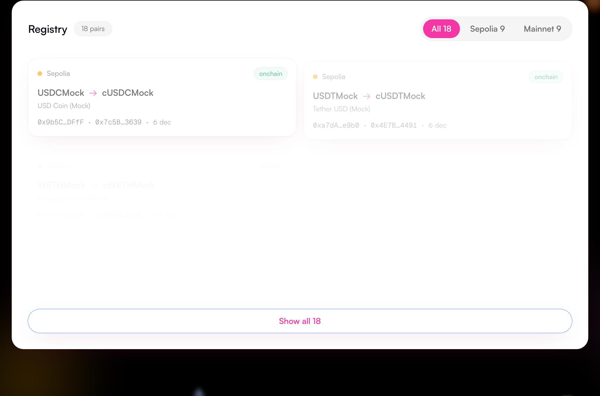
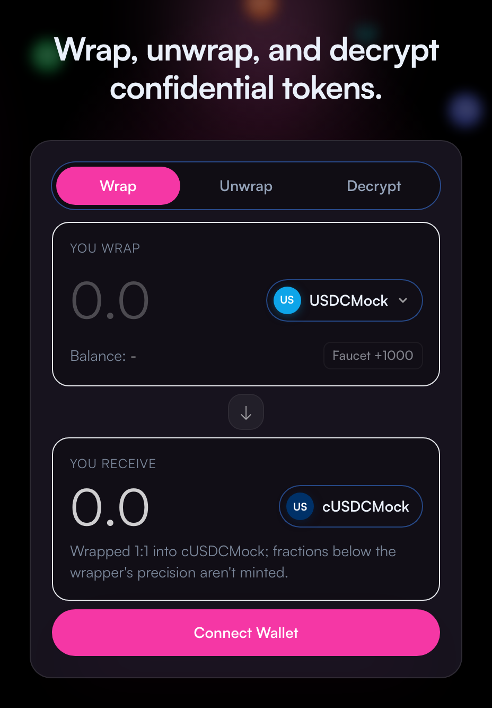
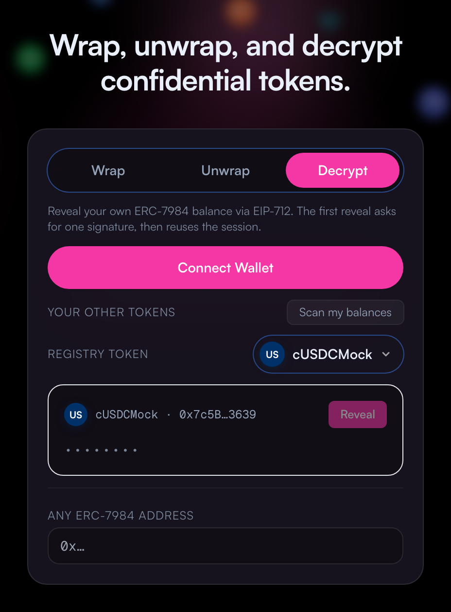
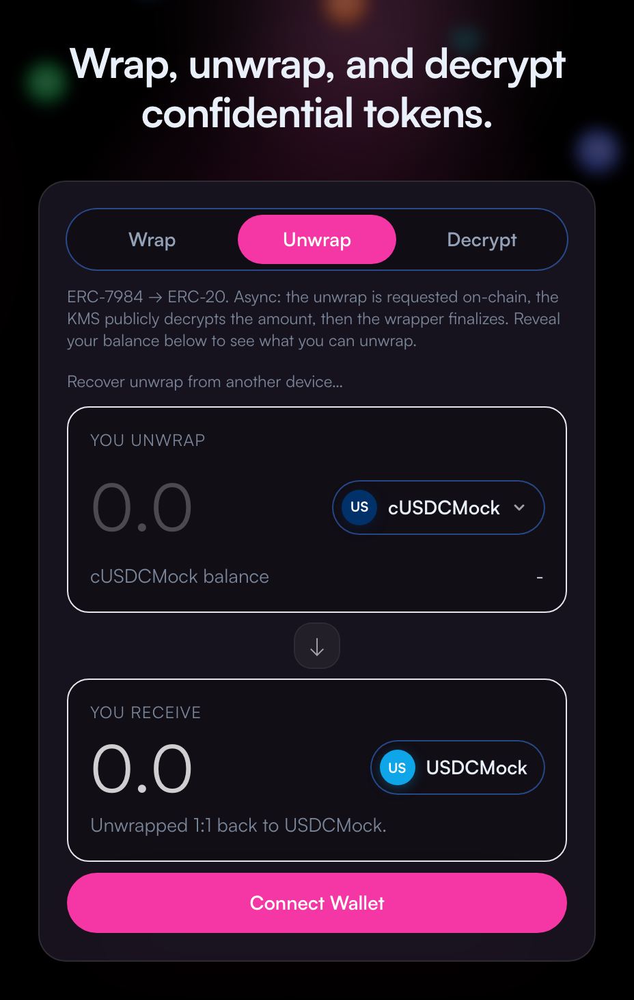

Developers spin up their own testnet ERC-20s and ERC-7984 wrappers rather than reuse the official Zama Wrappers Registry.
Each app targets a slightly different set of tokens, so confidential assets from one app don't interoperate with the next.
Users end up holding confidential assets that only look like the real thing — the ecosystem fragments.
Every canonical ERC-20 ↔ ERC-7984 pair on Sepolia + Mainnet, with live metadata: name, symbol, decimals, addresses.
Reveal your own balance of any confidential token via EIP-712 — registry or arbitrary paste-in.
Convert any registry ERC-20 into its confidential twin and back — clean approvals, resumable async unwrap.
Claim the official cTokenMocks in one click and try the whole flow immediately.
Every canonical ERC-20 ↔ ERC-7984 pair, live metadata, dual-chain.
Mint an official cTokenMock on Sepolia in one click.
Approve → encrypt → wrap 1:1 into its confidential twin.
Reveal the new ERC-7984 balance via EIP-712.
Async request → KMS decrypt → finalize; resumable.
Paste any confidential token — even outside the registry.

All 8 official cTokenMocks surfaced from the on-chain Wrappers Registry, plus a dual-chain filter — Sepolia 9 · Mainnet 9.
name · symbol · decimals · both addresses
On-chain is the source of truth; a local overlay fills dev-only pairs, deduped.
One click on Faucet +1000 mints the official cTokenMock ERC-20 straight to your wallet on Sepolia.
mint → balance updates → ready to wrap
Per-address cap aware — the button disables when a claim would exceed the cap.

1 Approve ERC-20 allowance
2 FHE-encrypt the amount client-side
3 Wrap tx → confidential ERC-7984
Pre-flight guards catch missing allowance + insufficient balance before you spend gas. Wrapped 1:1 into cUSDCMock — only the ciphertext handle lands on-chain.

The freshly-minted ERC-7984 balance is revealed through the EIP-712 user-decryption flow.
Sign once → session cached → cleartext balance
Later reveals reuse the session — no repeat prompt. The public only ever saw a ciphertext handle.
request → KMS public-decrypt → finalize
A three-step async flow: the plaintext amount is released by Zama's KMS before the contract returns the underlying ERC-20.
Every step is checkpointed to IndexedDB — resumable, even across devices, if you refresh mid-flow.

Paste any ERC-7984 address — a token that was never registered here — and reveal your balance the same way.
paste 0x… → is-confidential? → reveal
Auto-detect also scans the wallet for non-zero confidential holdings. Decryption isn't limited to the registry.
All 8 official cTokenMocks surfaced from on-chain; dual-chain Sepolia + Mainnet browse.
Wrap, unwrap, and EIP-712 user-decrypt produce the expected on-chain results.
Two documented add-pair paths — on-chain script + local config — with a real example.
Approvals, network switching, resumable unwrap, and every error humanized — never a raw revert.
Typed end-to-end, single error funnel, no debug residue, SSR-safe readiness gates.
Live on Sepolia + Mainnet, public-RPC fallback, Mainnet writes behind an explicit confirm.